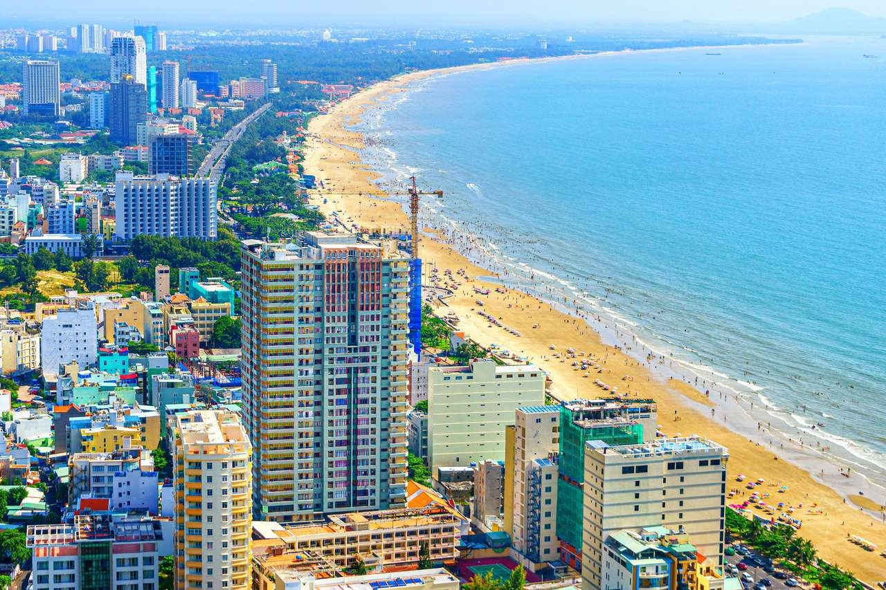

Paris, Francia
Disfruta de un viaje por la ciudad de Paris. Vuelo + hotel una semana desde 800 €. Aqui te dejo un link de lugares que puedes visitar en Francia.Lugaresenfranciq

Elige entre los destinos mas destacados para tus vacacones.
Visita los lugares más bonitos del mundo con ofertas exclusivas durante la Feria de 2025.
Disfruta de un viaje por la ciudad de Paris. Vuelo + hotel una semana desde 800 €. Aqui te dejo un link de lugares que puedes visitar en Francia.Lugaresenfranciq
Descubre Dakar: su cultura, su comida y sus playas. Visita la Isla de Gorée, el Lac Rose. Una semana con vuelo y hotel desde 700 €. Aqui te dejo un link sobre la isla de gorea en Dakar que tiene mucha historia. wikipedia y lugares que vistar en Francia.
